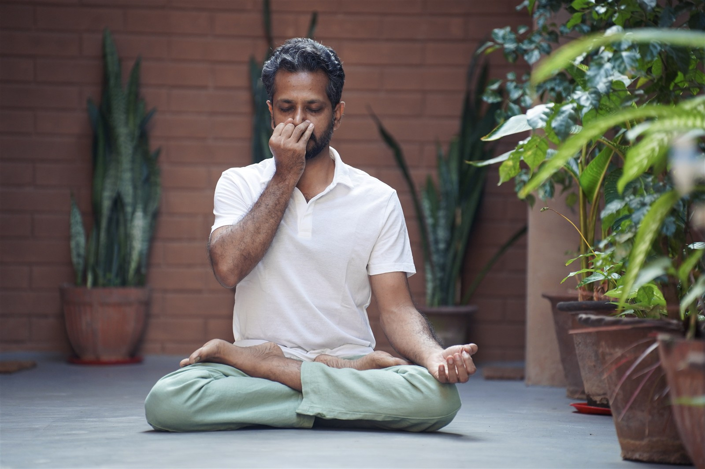
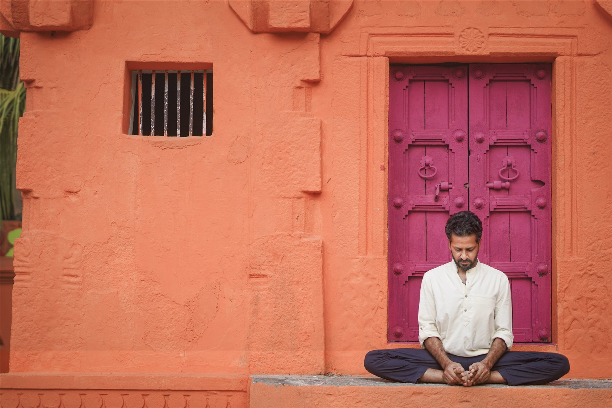

Pranayama · Online & in Mysore
Prana Urja
A one-month immersion in pranayama, rooted in the traditional Hatha Yoga system.

DaysMonday to Friday
Time9:00–10:00 a.m. IST
FormatIn Mysore & online
The programme
Understand the breath, not simply follow it.
Learn classical pranayama techniques in a progressive and structured way, with attention to how the breath is actually experienced.
The practice is guided so that each technique is understood. You begin to recognise patterns in body, mind, and energy, and experience the koshas directly rather than only as theory.
The class is clear and accessible for beginners, while offering teachers depth to refine how they approach and guide practice.
Over time, the breath becomes steadier, the system more settled, and your practice more independent and grounded.
